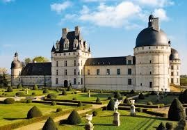
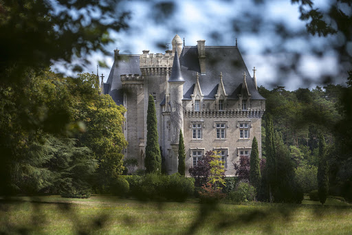
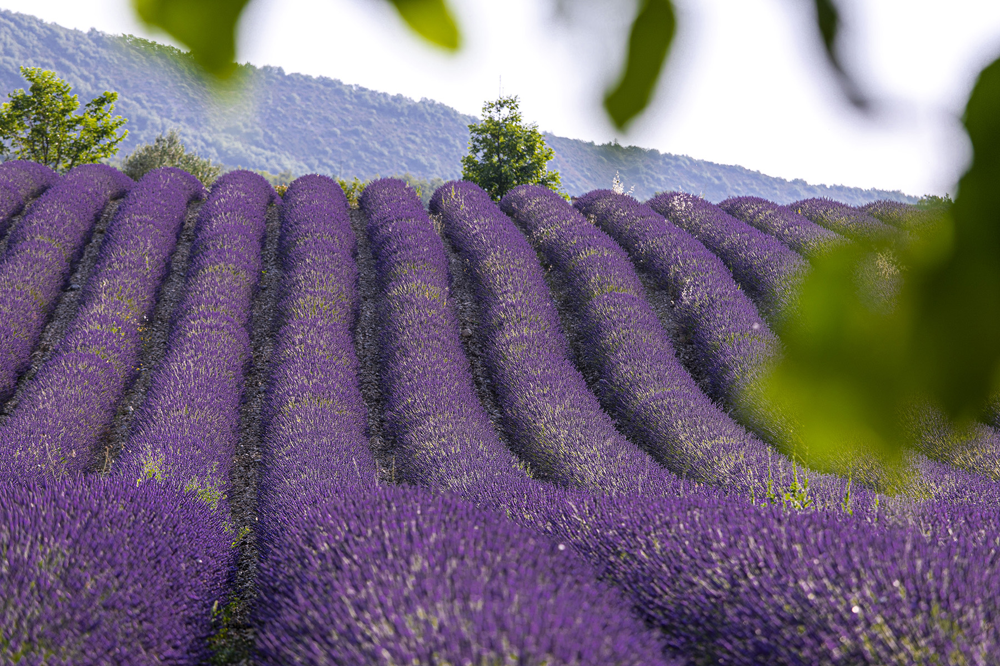
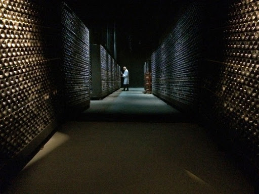
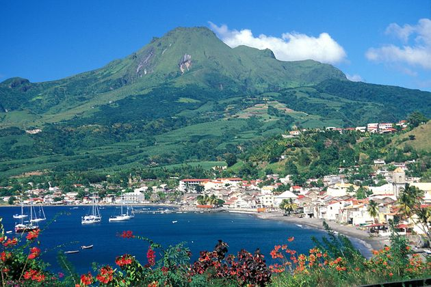
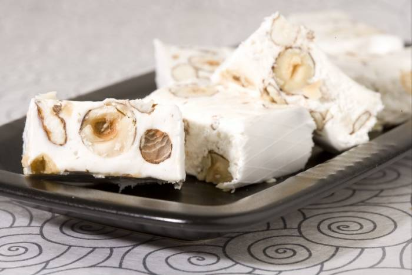
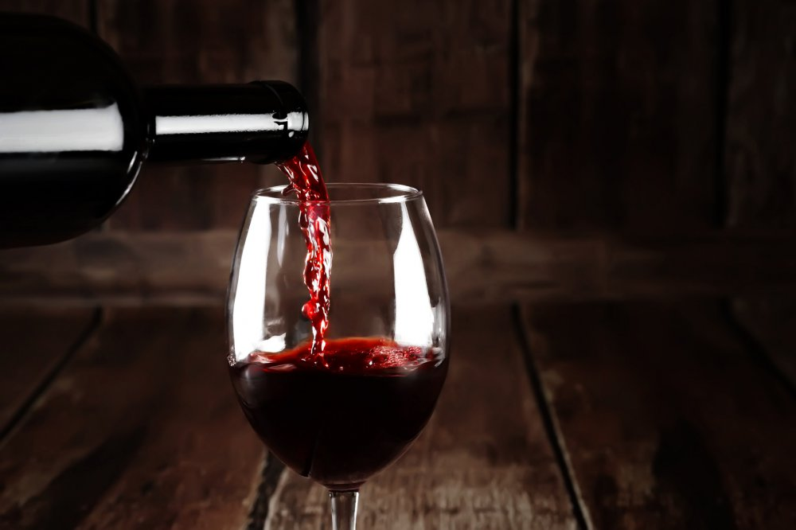
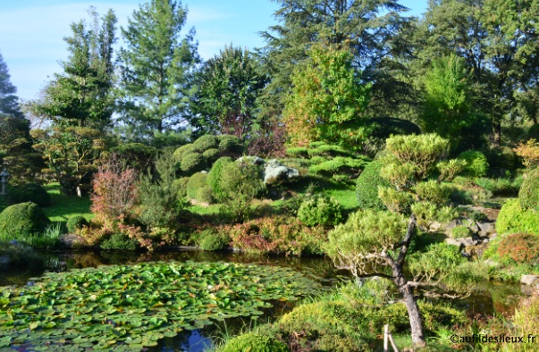

Le Palais idéal est un monument construit à Hauterives par le facteur Ferdinand Cheval, de 1879 à 1912. Chef-d'œuvre de l'architecture naïve et de l'art naïf, il est classé au titre des monuments historiques depuis 1969.

C'est aujourd'hui le monument le plus ancien de Grignan. De style roman primitif, la chapelle date du xie siècle. Sa façade et la régularité de sa construction en petit appareil en font un édifice remarquable.

Édifiée sur un promontoire rocheux, la forteresse médiévale de Suze-la-Rousse est un spectaculaire ouvrage militaire protégé par des tours et un rempart. Elle est transformée au 16e puis au 18e siècle en une grande demeure.

Elles poussent surtout sur les sols calcaires secs et ensoleillés, à l'exception de Lavandula stoechas, qui préfère les sols siliceux.Toutes les lavandes sont des plantes mellifères, c'est-à-dire très recherchées par les abeilles.
Le massif du Vercors au bord de la rivière de la Drôme. Die et sa vallée sont dominées par la montagne de Glandasse à 2 041 mètres, barrière rocheuse massive et raide composant l'extrémité méridionale du Vercors.

la Drôme est connue pour ses descentes en canoë-kayak que ce soit pour des descentes sportives en hiver ou au printemps ou des versions de canoë accessibles aux familles en été.

Plus qu’une marque, Jaillance est une signature, celle que les vignerons coopérateurs de Die ont décidé d’apposer sur leurs vins, gage de qualité et de respect de la tradition, pour garantir un plaisir authentique.

Le parc Jouvet est un jardin botanique public de 7 hectares (72 500 m2) situé sur la commune de Valence, aux abords du Rhône, sous l'esplanade du Champ de Mars, à l'aplomb du château de Crussol et des monts du Vivarais.

Le département de la Drôme (/dʁom/) est un département français situé dans le sud-est de la France, et dont le nom vient de la rivière du même nom. Il fait partie de la région Auvergne-Rhône-Alpes. Sa préfecture est Valence.

Le nougat est une confiserie typique des pays du bassin méditerranéen. Il peut être blanc (avec blanc d'œuf monté en neige) ou noir (sans blanc d'œuf). Il contient du miel et/ou du sucre, des fruits à coque et/ou des fruits secs, entiers, cassés ou moulus

La Clairette de Die tradition est un vin pétillant doux et fruité, produit dans un terroir idéal, situé entre les contreforts du Vercors et le soleil de la Provence. Naturellement pétillante, la Clairette de Die tradition est élaborée à partir des cépages Muscat blanc à petits grains et Clairette blanche.

Erik Borja livre ici son interprétation du concept en l'adaptant à la géographie et au climat de la Drôme selon les principes du Feng-Shui et des règles de composition des maîtres jardiniers japonais. Il y exprime sa propre sensibilité, sa nature de sculpteur et de coloriste mais aussi ses racines méditerranéennes et considère ce jardin comme son plus fidèle autoportrait.